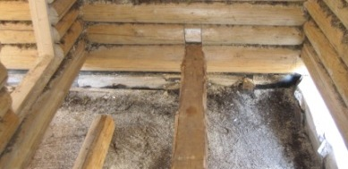
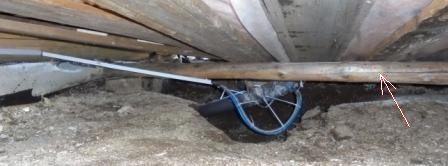
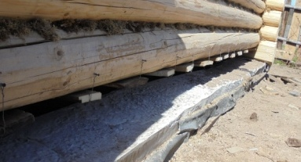

- Главная
- Cруб
- Выпиливание входной двери
- Двери
- Монтаж слива парной
- Основание первого уровня пола
- Обрешётка первого уровня пола
- Тепло и гидроизоляция в парной
- Основной пол в парной
- Окно в предбаннике
 Монтаж пола первого уровня.
Монтаж пола первого уровня.
Монтаж пола первого уровня.
Монтаж пола первого уровня.

Пол будет опираться на выступы в нижних бревнах сруба и на поперечный полубрус.
Теплоизоляцию и слив воды будет обеспечивать первый уровень пола. Он опирается на жердь под полубрусом.
Жердь лежит на кирпичах. Изолированная от них рубероидом. Кирпичи - просто на земле. Нагрузка на первый уровень пола будет не большая, так что такая конструкция достаточна.
Доски первого уровня пола одним концом лежат на жерди, а другим подвешиваются к низу сруба.
